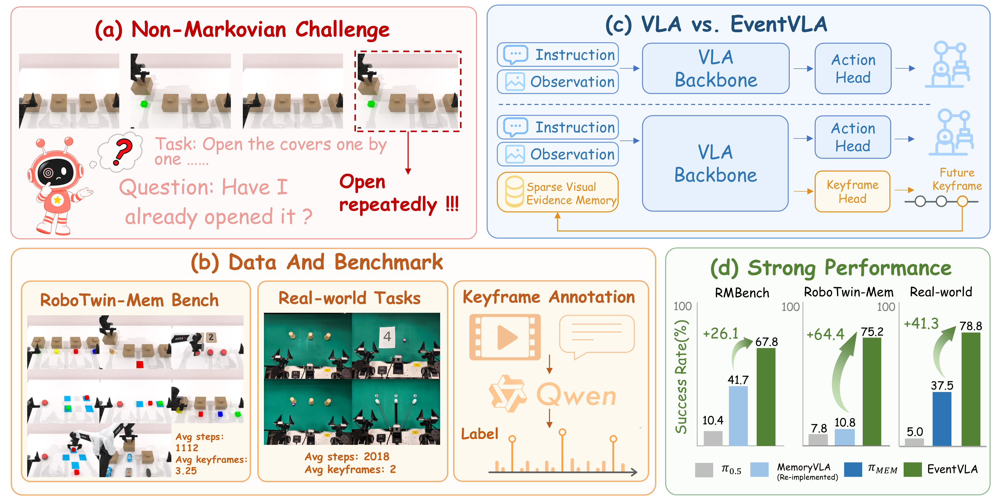

Pick the Unhidden Block
Long-Horizon VLA for Robotics
EventVLA
Event-Driven Visual Evidence Memory for Long-Horizon Vision-Language-Action Policies
EventVLA introduces event-driven visual evidence memory: the policy detects task-relevant events, stores key visual evidence as raw keyframe images, and reuses this memory while predicting actions.
Abstract
Long-horizon robotic tasks often require recalling visually grounded evidence that appeared many steps earlier. EventVLA tackles this by coupling a vision-language-action policy with an event-driven keyframe memory mechanism. Instead of relying only on compressed latent state, it stores task-relevant visual evidence as raw keyframe images and retrieves them during action generation. This repository is released together with RoboTwin-MeM, a memory-dependent benchmark built on RoboTwin 2.0.
Overview
EventVLA and RoboTwin-MeM: model design and benchmark composition from the official repository.

RoboTwin-MeM benchmark
Pick Objects in Order
Rearrange Blocks Hard
Reproduce Route
Put Back Block Hard
Cover Blocks Hard
Find Seal And Seal Stamp
Press Button Keyframe
Task Videos
Task 1
Task instruction: Cover the block with the nearest cup, then lift the cup covering the block and pick up the block.
Task 2
Task instruction: Lift the cups from left to right, open the cup containing the block and pick the block up. Pick up and put down the block the number of times as shown on the paper.
Task 3
Task instruction: Pick up and put down the block the number of times as shown on the paper.
Task 4
Task instruction: Pick up and put down the bottles on the table in the order which they are pointed by the stick one by one at the beginning.
Citation
EventVLA citation will be added after paper release.
@misc{eventvla2026,
title = {EventVLA: Event-Driven Visual Evidence Memory for Long-Horizon Vision-Language-Action Policies},
note = {Project page based on the public EventVLA repository},
year = {2026}
}Built on top of: RoboTwin 2.0, RMBench, StarVLA.